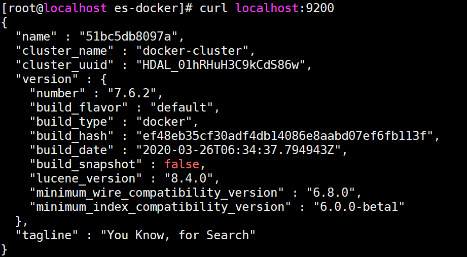
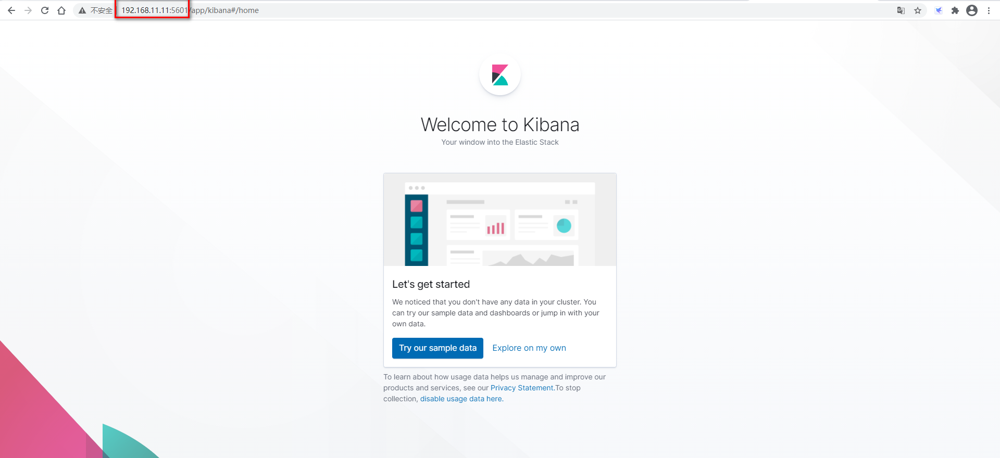
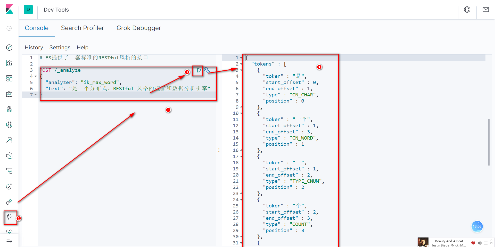
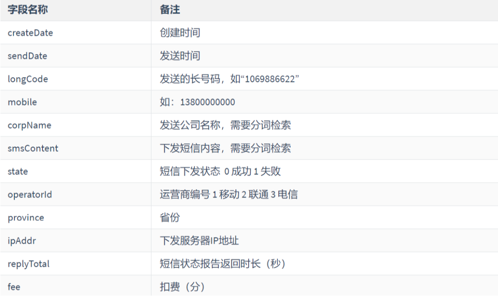
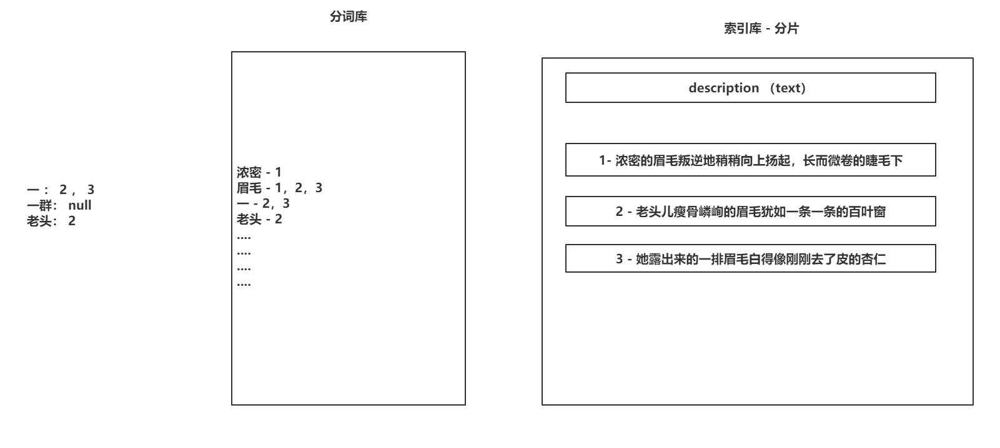
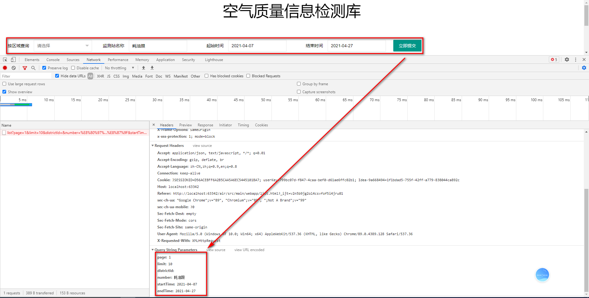

Elasticsearch一、为什么学Elasticsearch二、安装Elasticsearch&Kibana2.1 准备docker-compose.yml2.2 准备config目录下的两个配置文件2.2.1 elasticsearch.yml2.2.2 kibana.yml2.3 设置data目录的权限2.4 设置vm.max_map_count配置2.5 查看ES和Kibana的启动情况2.6 安装IK分词器三、Elasticsearch的存储结构四、创建索引4.1 创建索引不设置存储结构4.2 ES的数据类型4.3 创建索引&设置存储结构练习题一、倒排索引二、文档操作（RESTful）2.1 添加文档2.1.1 自动生成id添加文档2.1.2 手动指定id添加文档2.2 修改文档2.2.1 doc方式修改2.3 删除文档三、文档操作（Java）3.1 连接Elasticsearch3.2 添加文档3.3 修改文档3.4 删除文档3.5 批量操作四、ES的查询4.1 准备索引和数据4.2 term查询4.2.1 term查询4.2.2 terms查询4.3 match查询4.3.1 match查询4.3.2 match_all查询4.3.3 multi_match查询4.4 其他查询4.4.1 id查询4.4.2 range查询4.4.3 ids查询（了解）4.4.4 prefix查询（了解）4.4.5 fuzzy查询（了解）4.4.6 wildcard查询（了解）4.4.7 regexp查询（了解）一、复合查询1.1 Bool（相当重要）1.2 Boosting二、高亮查询三、改Air3.1 根据Air表结构创建Air索引，并设置存储结构3.2 通过代码的形式，将数据库现有的数据同步到ES中3.3 修改页面，追加查询条件3.4 根据分页条件，查询条件，高亮显示完成与ES查询的交互3.4.1 准备工作，创建连接ES的对象3.4.2 Controller3.4.3 Service3.5 在增删改操作的同时，同步数据到ES（）四、聚合查询五、改Air一、Elasticsearch的地图（了解）一、ES的深度分页Scroll二、bool查询中的Filter三、ES的Refresh和Flush（Buffer和Cache）
- 海量数据如何存储：Elasticsearch天生分布式，基于分片帮你将一个数据存储到多台服务，并自动帮你备份和恢复。
- 全文检索MySQL效率比较低：Elasticsearch底层基于Luence实现，Luence底层基于Java，效率极高。Elasticsearch还可以基于内存查找数据，提供了非常丰富的查询条件。
- 高亮显示：添加一个配置，就可以将的匹配项以
<span style='color:red;'></span>展示。- 数据的统计成本太高：ES提供十多个聚合函数，帮助你快速的海量数据中做统计。
以后如果使用的版本不同，根据官方文档操作：https://www.elastic.co/guide/en/elasticsearch/reference/7.x/getting-started.html
version"3.1"services elasticsearch imagedaocloud.io/library/elasticsearch7.6.2 restartalways container_nameelasticsearch ports9200:9200 environment"discovery.type=single-node""ES_JAVA_OPTS=-Xms256m -Xmx256m" volumes./data:/usr/share/elasticsearch/data./config/elasticsearch.yml:/usr/share/elasticsearch/config/elasticsearch.yml kibana imagedaocloud.io/library/kibana7.6.2 restartalways container_namekibana ports5601:5601 environmentelasticsearch_url=http://192.168.11.11:9200 depends_onelasticsearch volumes./config/kibana.yml:/usr/share/kibana/config/kibana.ymlxxxxxxxxxxcluster.name"docker-cluster"network.host0.0.0.0xxxxxxxxxxserver.namekibanaserver.host"0"elasticsearch.hosts "http://elasticsearch:9200" xpack.monitoring.ui.container.elasticsearch.enabledtrue
通过chmod -R 777 data 设置当前目录所有用户都拥有rwx的权限
修改文件：vi /etc/sysctl.conf
添加配置项：vm.max_map_count=262144
查看配置：sysctl -p
| 查看ES |
|---|
|  |
| kibana启动情况 |
|---|
|  |
去Github上去下载（失败）
将下载好的zip压缩包解压得到elasticsearch-analysis-ik-7.6.2，将elasticsearch-analysis-ik-7.6.2赋值到Linux操作系统中
将elasticsearch-analysis-ik-7.6.2目录名修改为analysis-ik
通过docker的cp命令，赋值到elasticsearch容器的plugins目录下：
xxxxxxxxxxdocker cp analysis-ik/ elasticsearch:/usr/share/elasticsearch/plugins重启elasticsearch容器
测试的方式
查看效果 
Elasticsearch服务下，通过索引（Index）存储数据的
索引在存储时，被默认分成了5个分片（存储数据的物理地址），最少还要有一套备份分片（分担查询压力）
一个索引下还包含一个Type的概念，可以认为Type就是在设置索引下数据的存储结构
5.x：多个Type，6.x：一个Type，7.x：没有Type（底层还有）
索引下存放数据的逻辑单位叫做文档（Document），一行文档相当于MySQL中的一行数据
一行文档包含多个字段（Field），文档会自动分配id，不需要额外添加id
创建索引的RESTful访问接口
xxxxxxxxxx# 创建索引,指定分片数,不指定类型(存储结构)PUT /book{"settings": {"number_of_shards": 5,"number_of_replicas": 1}}
索引得备份分片可以动态的横向扩展
索引的主分片是不可以动态扩展的，修改主分片的数量，需要删除索引，重新创建
主分片的数量需要根据三点来确定：（了解）
- 写的操作量（如果写多，主分片要多）
- 根据每一个索引预期存储的数据容量（本地磁盘情况）
- 如果对查询性能有要求，如何可以将数据都存储在JVM内存中，根据JVM内存容量和数据容量。
字符串：
- text：字符串
- keyword：字符串
数值：
- 整型：byte，short，integer，long
- 浮点型：unsigned_long，scaled_float，half_float，float，double
时间：
- date：时间类型
布尔：
- Boolean：true和false二选一
二进制：
- binary：只能存储Base64
IP：
- ip：会帮你校验ip的格式，支持IPv4还支持IPv6
xxxxxxxxxx# 创建索引,指定分片,指定存储结构PUT /book{ "settings": { "number_of_shards": 5, "number_of_replicas": 1 }, "mappings": { "properties": { "name": { "type": "text" }, "author": { "type": "text" }, "count": { "type": "long" }, "time": { "type": "date", "format": "yyyy-MM-dd HH:mm:ss||yyyy-MM-dd||strict_date_optional_time||epoch_millis" }, "style": { "type": "keyword" } } }}
| 创建如下索引结构 |
|---|
|  |
xxxxxxxxxxPUT /sms-logs-index{ "settings": { "number_of_shards": 5, "number_of_replicas": 1 }, "mappings": { "properties": { "createDate": { "type": "date", "format": "yyyy-MM-dd HH:mm:ss||yyyy-MM-dd||epoch_millis" }, "sendDate": { "type": "date", "format": "yyyy-MM-dd HH:mm:ss||yyyy-MM-dd||epoch_millis" }, "longCode": { "type": "long" }, "mobile":{ "type": "text" }, "corpName":{ "type": "text", "analyzer": "ik_max_word" }, "smsContent":{ "type": "text", "analyzer": "ik_max_word" }, "state":{ "type": "byte" }, "operatorld":{ "type": "byte" }, "province":{ "type": "keyword" }, "ipAddr":{ "type": "ip" }, "replyTotal":{ "type": "integer" }, "fee":{ "type": "integer" } } } }
| 倒排索引 |
|---|
|  |
按照官方文档要求，设置请求路径和请求方式
https://www.elastic.co/guide/en/elasticsearch/reference/7.x/docs-index_.html
xxxxxxxxxx# 添加文档（自动生成id）POST /book/_doc{ "name": "盘龙", "author": "我吃西红柿", "count": 99999, "style": "玄幻", "time": "2011-11-11"}xxxxxxxxxx# 添加文档(手动指定id)POST /book/_create/1{ "name": "斗破苍穹", "author": "天残土豆", "count": 888888, "style": "爽文", "time": "2011-11-11 08:08:08"}
文档路径：https://www.elastic.co/guide/en/elasticsearch/reference/7.x/docs-update.html
xxxxxxxxxx# 修改文档(doc方式)POST /book/_update/1{ "doc": { "author": "天残土豆片" }}
https://www.elastic.co/guide/en/elasticsearch/reference/7.x/docs-delete.html
xxxxxxxxxx# 删除文档DELETE /book/_doc/1
打开IDEA
创建项目
导入依赖
xxxxxxxxxx<dependencies><dependency><groupId>org.elasticsearch</groupId><artifactId>elasticsearch</artifactId><version>7.6.2</version></dependency><dependency><groupId>org.elasticsearch.client</groupId><artifactId>elasticsearch-rest-high-level-client</artifactId><version>7.6.2</version></dependency></dependencies>编写工具类连接ES
xpublic static RestHighLevelClient getClient(){HttpHost httpHost = new HttpHost("192.168.11.11",9200);RestClientBuilder restClientBuilder = RestClient.builder(httpHost);RestHighLevelClient restHighLevelClient = new RestHighLevelClient(restClientBuilder);return restHighLevelClient;}
xxxxxxxxxxpublic void create() throws IOException { //1. 创建指定的(添加文档)Request对象 - 设置索引名称 IndexRequest request = new IndexRequest("book"); //2. 设置数据信息 request.id("2"); Map source = new HashMap(); source.put("name","斗罗大陆"); source.put("author","唐家三少"); source.put("count",777777); source.put("style","轩轩轩"); source.put("time",new Date()); request.source(source); //3. 通过RestHighLevelClient将Request对象发送给ES,ES会给你一个Response IndexResponse resp = ESClient.getClient().index(request, RequestOptions.DEFAULT); //4. 通过Response判断添加是否成功 if (resp.getResult().toString().equalsIgnoreCase("created")) { System.out.println("添加文档成功!!!"); }}
阿巴阿巴……
阿巴阿巴……
类似Redis的管道，将大量的请求信息提前封装到客户端，一次性的发送给ES服务，一起执行
根据预习资料的代码中的TestData创建索引并添加测试数据…………
完全匹配，不会将用户输入的关键字进行分词匹配，将用户输入的关键字完整的去分词库中匹配，得到文档的id，再通过文档id去分片上拉取数据。
xxxxxxxxxx# term查询,针对一个字段做等值判断 where province = ?# term不会对用户输入的关键字进行分词POST /sms-logs-index/_search{ "query": { "term": { "province": { "value": "武汉" } } }}xxxxxxxxxxpublic void term() throws IOException { //1. 创建指定的Request对象 SearchRequest request = new SearchRequest(); request.indices("sms-logs-index"); // ... //2. 设置查询条件 SearchSourceBuilder sourceBuilder = new SearchSourceBuilder(); //2.1 term查询条件 .... sourceBuilder.query(QueryBuilders.termQuery("province","武汉")); request.source(sourceBuilder); //3. 执行查询获取Resp SearchResponse resp = ESClient.getClient().search(request, RequestOptions.DEFAULT); //4. 解析Resp获取查询到的数据 for (SearchHit hit : resp.getHits().getHits()) { System.out.println(hit.getSourceAsMap()); }}
xxxxxxxxxx# terms查询,针对一个字段做多个值的等值判断 where province in (?,?,?)# terms不会对用户输入的关键字进行分词POST /sms-logs-index/_search{ "query": { "terms": { "province": [ "上海", "南京", "北京" ] } }}xxxxxxxxxxpublic void terms() throws IOException { //1. r SearchRequest request = new SearchRequest(); request.indices("sms-logs-index"); //2. f SearchSourceBuilder sourceBuilder = new SearchSourceBuilder(); //2.1 terms查询 sourceBuilder.query(QueryBuilders.termsQuery("province","北京","上海")); request.source(sourceBuilder); //3. e SearchResponse resp = ESClient.getClient().search(request, RequestOptions.DEFAULT); //4. resp for (SearchHit hit : resp.getHits().getHits()) { System.out.println(hit.getSourceAsMap()); }}
非完全匹配，会根据查询的字段类型，来决定是否将用户输入的关键字进行分词。
- 查询的是keyword类型字段，不会对关键字分词，直接去分词库匹配。
- 查询的是text类型，会对关键字进行分词，去匹配分词库。
- 默认ES查询数据只查询前10条
xxxxxxxxxx# match查询会根据查询的字段类型,来决定是否对用户输入的关键字进行分析.POST /sms-logs-index/_search{ "query": { "match": { "smsContent": "平安" } }}
xxxxxxxxxx# match_all 查询全部数据POST /sms-logs-index/_search{ "query": { "match_all": {} }, "from": 0, "size": 3}xxxxxxxxxx@Testpublic void matchAll() throws IOException {//1. rSearchRequest request = new SearchRequest();request.indices("sms-logs-index");//2. fSearchSourceBuilder sourceBuilder = new SearchSourceBuilder();//2.1 terms查询sourceBuilder.query(QueryBuilders.matchAllQuery());sourceBuilder.from(0);sourceBuilder.size(5);request.source(sourceBuilder);//3. eSearchResponse resp = ESClient.getClient().search(request, RequestOptions.DEFAULT);//4. respfor (SearchHit hit : resp.getHits().getHits()) {System.out.println(hit.getSourceAsMap());}}
xxxxxxxxxx# multi_match,根据一个值匹配多个字段# 如何提升ES的查询命中率:# 多加分词器,可以加入拼音分词器# 使用其他的查询方式,比如现在的multi_match,fuzzy,prefix,boolQueryPOST /sms-logs-index/_search{ "query": { "multi_match": { "query": "平安", "fields": ["corpName","smsContent","province"] } }}
xxxxxxxxxx# 根据id查询GET /sms-logs-index/_doc/1range支持数值，时间以及ip的范围检索
xxxxxxxxxx# range查询,范围查询# 做时间范围筛选,如果使用年月日的格式,存在8个小时的时差问题.# 使用毫秒值不存在这个问题,时间戳也不是不存在问题POST /sms-logs-index/_search{ "query": { "range": { "ipAddr": { "gt": "10.126.2.8" } } }}
xxxxxxxxxx# ids查询，可以匹配多个id值POST /sms-logs-index/_search{ "query": { "ids": { "values": ["1","2","3","4"] } }}
xxxxxxxxxx# prefix查询，匹配前缀POST /sms-logs-index/_search{ "query": { "prefix": { "corpName": { "value": "途虎" } } }}
xxxxxxxxxx# fuzzy查询,模糊查询,允许有错别字POST /sms-logs-index/_search{ "query": { "fuzzy": { "corpName": { "value": "盒马鲜熟", "prefix_length": 3 } } }}
xxxxxxxxxx# wildcard查询,类似MySQL的like查询,可以添加通配符和占位符.*代表通配,?代表站位POST /sms-logs-index/_search{ "query": { "wildcard": { "corpName": { "value": "中???" } } }}
xxxxxxxxxx# regexp查询,正则查询POST /sms-logs-index/_search{ "query": { "regexp": { "mobile": "137[0-1]{8}" } }}
将多个查询条件以一定的业务逻辑拼接在一起，包含must（and），must_not（not !），should（or）
xxxxxxxxxx# 符合查询,短信内容包含 收货和上门 ,公司名称不能是途虎养车 , 地区是北京或上海POST /sms-logs-index/_search{"query": {"bool": {"must": [{"match": {"smsContent": "订单"}},{"match": {"smsContent": "配送"}}],"must_not": [{"term": {"corpName": {"value": "中国移动"}}}],"should": [{"term": {"province": {"value": "南京"}}},{"term": {"province": {"value": "武汉"}}}],"minimum_should_match": 0}}}xxxxxxxxxx/*** # 符合查询,短信内容包含* 订单和配送* 公司名称不能是途虎养车* 地区是北京或上海*/public void bool() throws IOException {//1. rSearchRequest request = new SearchRequest();request.indices("sms-logs-index");//2. fSearchSourceBuilder sourceBuilder = new SearchSourceBuilder();//2.1 BoolBoolQueryBuilder boolQuery = QueryBuilders.boolQuery();//2.2 MustboolQuery.must(QueryBuilders.matchQuery("smsContent","订单")).must(QueryBuilders.matchQuery("smsContent","配送")).mustNot(QueryBuilders.termQuery("corpName","途虎养车")).should(QueryBuilders.termQuery("province","北京")).should(QueryBuilders.termQuery("province","上海")).minimumShouldMatch(1);sourceBuilder.query(boolQuery);request.source(sourceBuilder);//3. eSearchResponse resp = ESClient.getClient().search(request, RequestOptions.DEFAULT);//4. respfor (SearchHit hit : resp.getHits().getHits()) {System.out.println(hit.getSourceAsMap());}}
应向查询结果score数值的，通过Boosting额外设置查询条件，如果匹配上额外查询条件，会将当前查询结果的score✖一个系数。（官方文档要求系数必须0 ~ 1.0之间，但是基于策略，大于1也没问题。）
xxxxxxxxxx# 通过boosting查询来影响分数, 如果公司名称是盒马鲜生,额外筛选smsContent还包含刘三的话,就乘以0.5的系数# positive: 查询结果的筛选方式# negative: 在匹配positive基础上,还满足negative,将score乘以系数# negative_boost: 系数POST /sms-logs-index/_search{"query": {"boosting": {"positive": {"term": {"corpName": {"value": "盒马鲜生"}}},"negative": {"match": {"smsContent": "刘三"}},"negative_boost": 2}}}
将你匹配上查询条件的关键字，以高亮（加个css样式）的形式展示出来
xxxxxxxxxx# 高亮查询POST /sms-logs-index/_search{"query": {"multi_match": {"query": "途虎养车","fields": ["smsContent","corpName"]}},"highlight": {"fragment_size": 10,"pre_tags": "<span style='color:red;'>","post_tags": "</span>","fields": {"smsContent": {},"corpName": {}}}}xxxxxxxxxxpublic void highLight() throws IOException {//1. rSearchRequest request = new SearchRequest();request.indices("sms-logs-index");//2. fSearchSourceBuilder sourceBuilder = new SearchSourceBuilder();sourceBuilder.query(QueryBuilders.multiMatchQuery("途虎养车","smsContent","corpName"));HighlightBuilder highlightBuilder = new HighlightBuilder();highlightBuilder.fragmentSize(20);highlightBuilder.preTags("<span style='color:red;'>");highlightBuilder.postTags("</span>");highlightBuilder.field("corpName");highlightBuilder.field("smsContent");sourceBuilder.highlighter(highlightBuilder);request.source(sourceBuilder);//3. execSearchResponse resp = ESClient.getClient().search(request, RequestOptions.DEFAULT);//4. respfor (SearchHit hit : resp.getHits().getHits()) {System.out.println(hit.getSourceAsMap());HighlightField highlightField = hit.getHighlightFields().get("smsContent");if(highlightField != null){System.out.println(highlightField.getFragments()[0]);}}}
将数据库中保存的空气质量信息同步到ES中，在做增删改MySQL的操作时，同步到ES中，在查询空气质量时，也需要去ES中查询数据
xxxxxxxxxxPUT /air{ "settings": { "number_of_shards": 5, "number_of_replicas": 1 }, "mappings": { "properties": { "districtId": { "type": "integer" }, "districtName": { "type": "keyword" }, "id": { "type": "integer" }, "lastModifyTime": { "type": "date", "format": "yyyy-MM-dd HH:mm:ss||yyyy-MM-dd||strict_date_optional_time||epoch_millis" }, "monitorTime": { "type": "date", "format": "yyyy-MM-dd HH:mm:ss||yyyy-MM-dd||strict_date_optional_time||epoch_millis" }, "monitoringStation": { "type": "text", "analyzer": "ik_max_word" }, "pm10": { "type": "integer" }, "pm25": { "type": "integer" } } }}
xxxxxxxxxx(SpringRunner.class)(value = "classpath:applicationContext-mybatis.xml")public class ElasticsearchDataTests { private AirMapper airMapper; public void sync() throws IOException { HttpHost httpHost = new HttpHost("192.168.11.11",9200); RestClientBuilder restClientBuilder = RestClient.builder(httpHost); RestHighLevelClient restHighLevelClient = new RestHighLevelClient(restClientBuilder); List<Air> list = airMapper.findByDistrictId(0); BulkRequest request = new BulkRequest(); ObjectMapper mapper = new ObjectMapper(); for (Air air : list) { IndexRequest indexRequest = new IndexRequest("air"); indexRequest.id(air.getId() + "").source(mapper.writeValueAsString(air), XContentType.JSON); request.add(indexRequest); } restHighLevelClient.bulk(request, RequestOptions.DEFAULT); }}
| 页面修改效果 |
|---|
|  |
xxxxxxxxxx // <beans ..... 代表这个类是一个配置类public class ElaticsearchConfig { ("${es.host}") // ${es.host} 引入了加载过的properties文件中的value值 private String host; ("${es.port}") // ${es.port} private Integer port; // <bean id="restHighLevelClient" class="org.elasticsearch.client.RestHighLevelClient" /> public RestHighLevelClient restHighLevelClient(){ HttpHost httpHost = new HttpHost(host,port); RestClientBuilder restClientBuilder = RestClient.builder(httpHost); RestHighLevelClient restHighLevelClient = new RestHighLevelClient(restClientBuilder); return restHighLevelClient; }}xxxxxxxxxx(value = "/list",method = RequestMethod.GET)public ResultVO list( (defaultValue = "1") Integer page, (value = "limit",defaultValue = "5") Integer rows, Integer districtId, String monitorStation, (pattern = "yyyy-MM-dd")Date startTime, (pattern = "yyyy-MM-dd")Date endTime) throws IOException { // 直接查询数据库的方式 // PageInfo<Air> allByPage = airService.findByPageAndDistrictId(page,rows , districtId); // 查询Elasticsearch中的数据 ResultVO resultVO = airService.findByPageAndConditionFromElasticsearch(page,rows,districtId,monitorStation,startTime,endTime); //封装数据 return resultVO;}
xxxxxxxxxxpublic ResultVO findByPageAndConditionFromElasticsearch(Integer page, Integer rows, Integer districtId, String monitorStation, Date startTime, Date endTime) throws IOException { //1. 创建SearchRequest SearchRequest request = new SearchRequest(); //2. 设置索引信息 request.indices("air"); //3. 设置查询条件 SearchSourceBuilder sourceBuilder = new SearchSourceBuilder(); BoolQueryBuilder boolQuery = QueryBuilders.boolQuery(); //3.1 设置查询区域districtId， if(districtId != null && districtId != 0){ boolQuery.must(QueryBuilders.termQuery("districtId",districtId)); } //3.2 设置监测站monitorStation if(!StringUtils.isEmpty(monitorStation)){ boolQuery.must(QueryBuilders.matchQuery("monitoringStation",monitorStation)); } //3.3 检测时间startTime if(startTime != null){ boolQuery.must(QueryBuilders.rangeQuery("monitorTime").gte(startTime)); } //3.4 检测时间endTime if(endTime != null){ boolQuery.must(QueryBuilders.rangeQuery("monitorTime").lte(endTime)); } //4. 设置分页信息 sourceBuilder.from((page - 1 ) * rows); sourceBuilder.size(rows); //5. 高亮信息（monitorStation的字段） HighlightBuilder highlightBuilder = new HighlightBuilder(); highlightBuilder.fragmentSize(10); highlightBuilder.preTags("<span style='color:red;'>"); highlightBuilder.postTags("</span>"); highlightBuilder.field("monitoringStation"); sourceBuilder.highlighter(highlightBuilder); sourceBuilder.query(boolQuery); request.source(sourceBuilder); //6. 将Request发送给Elasticsearch获取Resp返回结果 SearchResponse response = restHighLevelClient.search(request, RequestOptions.DEFAULT); //7. 获取到数据的总条数封装到VO的count里 Long count = response.getHits().getTotalHits().value; //8. 获取到具体的数据(高亮显示),封装到VO的data里 List<Map<String,Object>> data = new ArrayList<>(); for (SearchHit hit : response.getHits().getHits()) { Map<String, Object> air = hit.getSourceAsMap(); // 获取高亮显示的字段 HighlightField highlightField = hit.getHighlightFields().get("monitoringStation"); if(highlightField != null){ air.put("monitoringStation",highlightField.getFragments()[0].toString()); } // 添加到list data.add(air); } //9. 返回 return R.ok(data,count);}操作数据库成功后，再操作ES
ES的聚合函数，就类似MySQL中的avg，count，max，min，sum等等，但是不仅仅限于这几个，还有N多个。
传统：avg，max，sum，min
基于数学：extended_stats
去重计数：Cardinality
范围统计：Range，Date Range，IP Range
自动范围统计：Histogram，Date Histogram
根据keyword类型的字段查看数据出现的次数：terms
xxxxxxxxxxPOST /air/_search{"aggs": {"随便写": {"AGG_TYPE": {}}}}
Java操作聚合函数
xxxxxxxxxxpublic void terms() throws IOException {//1. SearchRequestSearchRequest request = new SearchRequest();request.indices("sms-logs-index");//2. 封装SearchSourceBuilder sourceBuilder = new SearchSourceBuilder();sourceBuilder.aggregation(AggregationBuilders.terms("yyy").field("corpName").size(10));request.source(sourceBuilder);//3. 执行查询SearchResponse resp = ESClient.getClient().search(request, RequestOptions.DEFAULT);//4. 解析数据Aggregations aggregations = resp.getAggregations();Terms yyy = aggregations.get("yyy");for (Terms.Bucket bucket : yyy.getBuckets()) {System.out.println("公司名称为:" + bucket.getKey());System.out.println("公司数据数量为:" + bucket.getDocCount());}}
统计PM2.5从0~50,51~100,101~150,150~200......等范围的数据条数
代码扔到Git上~~~~
Elasticsearch提供了一种数据类型：geo_point，这个数据用来存储经纬度。
创建索引，并添加测试数据
xxxxxxxxxxPUT /map{"settings": {"number_of_shards": 3,"number_of_replicas": 1},"mappings": {"properties": {"name": {"type": "text"},"location": {"type": "geo_point"}}}}添加测试数据
POST /map/_create/4 { "name": "天安门", "location": { "lon": 116.404188, "lat": 39.914454 } }
北科 116.257755 , 40.122636
生命 116.300636 , 40.101091
巩华城116.300276 , 40.137286
天安门116.404188 , 39.914454
xxxxxxxxxx- Filter和Query的区别：- Query会根据匹配的情况计算分数并排序- Filter不会计算分数做排序，效率高于Query，Filter一般配置Bool使用- geo_distance查询：```json# 确定一个点,和一个半径,查询范围(圈)内的数据POST /map/_search{"query": {"bool": {"filter": [{"geo_distance": {"distance": "27km","location": {"lat": 40.122636,"lon": 116.257755}}}]}}}
geo_bounds查询：
xxxxxxxxxx# 矩形范围查询POST /map/_search{"query": {"bool": {"filter": [{"geo_bounding_box": {"location": {"top_left": {"lat": 40.123984,"lon": 116.230995},"bottom_right": {"lat": 40.096614,"lon": 116.301134}}}}]}}}geo_polygon查询：
xxxxxxxxxx# 多个点确定多边形筛选数据POST /map/_search{"query": {"bool": {"filter": [{"geo_polygon": {"location": {"points": [{"lat": 40.122743,"lon": 116.257355},{"lat": 40.122674,"lon": 116.258326},{"lat": 40.122357,"lon": 116.258308},{"lat": 40.122467,"lon": 116.257598}]}}}]}}}
#